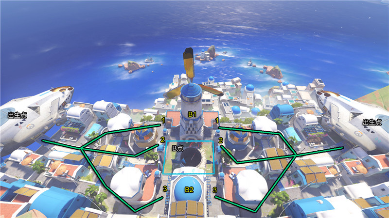
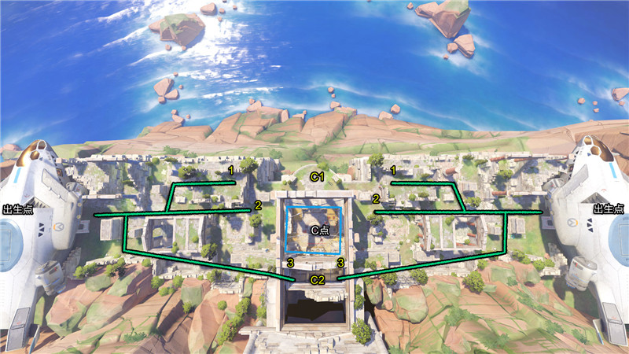
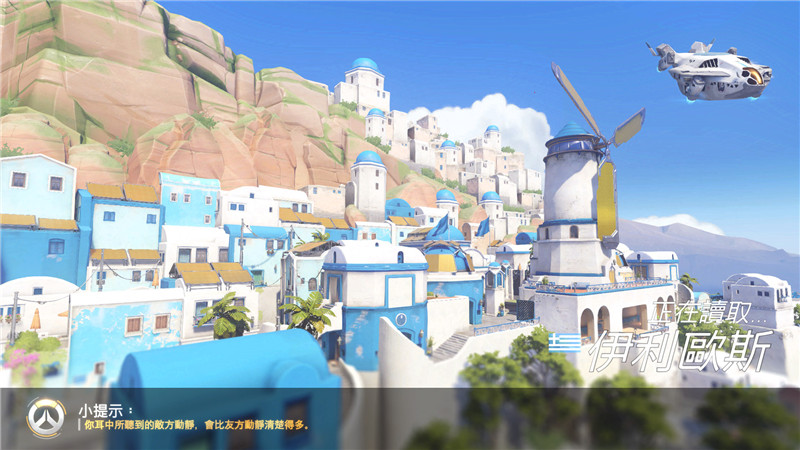

伊利欧斯是典型的抢点图。双方需要争夺的A点在建筑物内部，B点在外部，C点在一个破旧的古希腊神庙遗址的内部。伊利欧斯是最近一个补丁新出的地图，满满的希腊地中海风情，期间充满了蓝白相间的建筑。
上图为伊利欧斯的第一张地图。双方出生在地图的左右两侧。
进攻的线路有三条。线路1从地图上方绕路直接进入A点的侧门。线路2从正面进攻A点的正门线路3从右翼进攻，配合线路2的队友进攻。
荐的防守点： A1与A2 埋伏在此处的二楼可以有效打击处在A点内部以及从A点正门进攻的敌人。A点内部也是很好的防守点，几个英雄共同防守A点内部的话，需要提防的是对面AOE的打击，比如死神的大招，DVA的大招，闪光的大招，狂鼠的榴弹，法老之鹰的火箭等。
上图为伊利欧斯的第二张地图。双方出生在地图的左右两侧。B点是个围绕地图中央水井的长方形的区域。如图中蓝色方框所示。 进攻的线路有三条。线路1从地图上方进攻，线路2从B点正面进攻，线路3从下方绕路进攻B点的侧翼。 推荐的防守点：B1所在位置建筑内部，可以直接防守B点，须提防的是，从侧面过来的地方偷袭。B2所在位置也是攻防兼备的一个点，可以兼顾B点与线路3敌方进攻的防守。
上图为伊利欧斯的第三张地图。双方出生在地图的左右两侧。C点处在一个希腊神庙遗址内部。如图所示，蓝色的方框即为C点的争夺区域。
进攻的线路有三条： 线路1从地图上方进攻。
线路2从正面进攻。
线路3从下方绕路进攻,还可找机会绕道地方的后面包抄、骚扰，配合正面的队友。
推荐的防守点： C1位于C点的正上方，可以从正门打击C点里面的敌方势力，需提防的是来自于左右两侧的敌方进攻。
C2位于C点的正下方，可以从后门打击C点里面的敌方势力，同时兼顾防守敌方线路3的攻势。
伊利奥斯坐落在爱琴海的一个上升起的小岛上，是一个完美的如同明信片一样的地中海小镇，它是一个繁华的港口，有蜿蜒的山路跟美丽的景色。它是人们寻找放 松的一个地方，是有兴趣在废墟中探索的人们的理想度假地，有许多的古世界的文物和遗迹最近在这出土，这张地图的目标是控制区域。